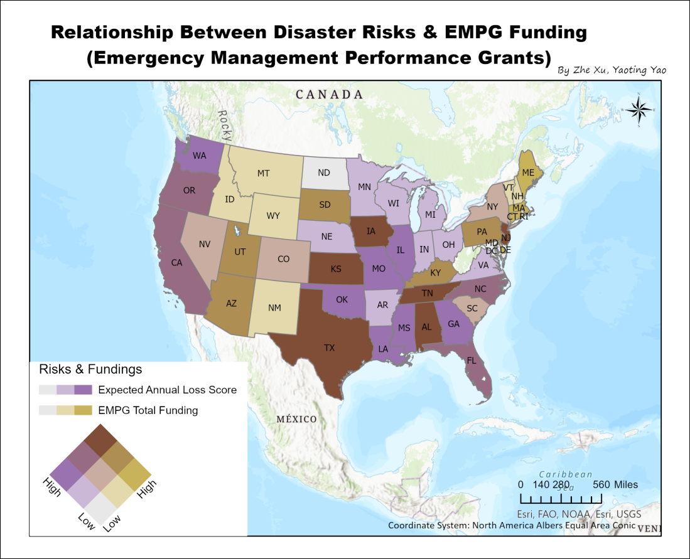
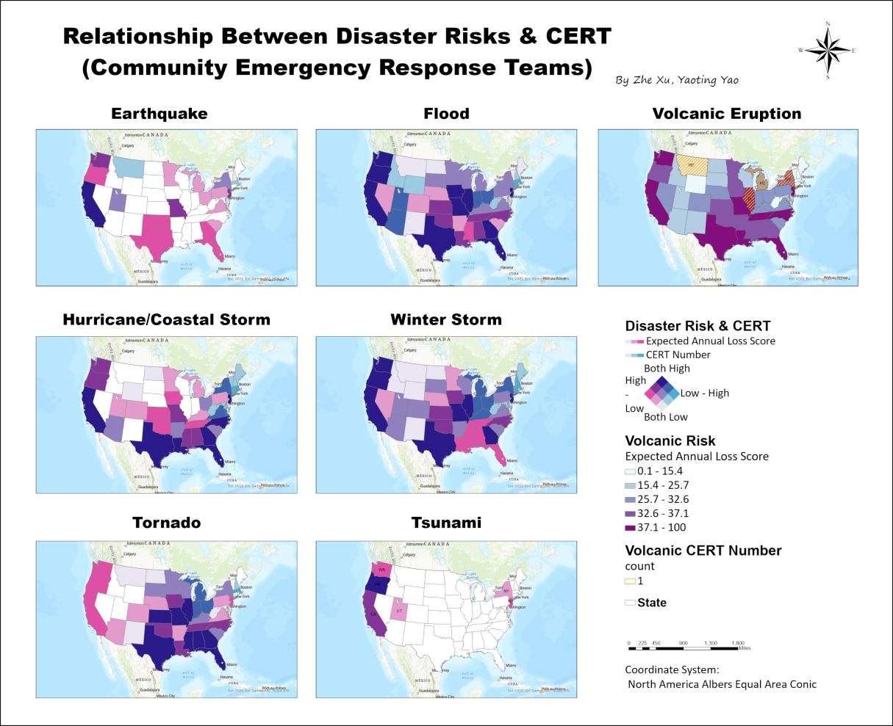

FEMA Emergency Management Data Migration In PostgreSQL
Yao-Ting Yao, Jessie Xu
Spatial Database Project
How many emergency response teams and federal grants does your hometown have for different disasters? Earthquakes, floods, coastal hurricane storms, tornados, tsunamis, volcanic eruptions, and winter storms are seven frequent disasters in the USA. This project provides essential information needed by federal and state emergency responders and the public to evaluate resource and federal grant allocation of emergency response.
GitHub Repository: YaoTingYao/FEMA_EMD_DBCreate FEMA Emergency Management dataset schema in pgAdmin
We created the FEMA Emergency Management dataset schema containing the information of the National Risk Index (NRI), Community Emergency Response Team (CERT), and Emergency Management Performance Grants (EMPG) datasets. For mining processes, we chose the state level as our geographic unit. We mined the content, punctuation, and format from the raw datasets to accommodate the migration. Create schemas, tables, relations, and other components that are required for the construction of a relational database in PostgreSQL. Add a state abbreviation column for the EMPG table for joint connections.
Data Visualization- Bivariate Maps
We visualize the distribution and relationships between risks and CERT numbers/ state funding with two bivariate maps. The application of FEMA data presents great potential for discovering emergency preparedness and response across the country.
This map shows relationship between national risk indices and the Emergency funding. Texas, New Jersey, Tennessee, Iowa, Kansas, and Alabama are present in brown colors, which means that these states have both high hazards risks and state emergency funding. Areas colored by khaki indicate higher funding and lower expected annual loss scores, like Maine, Massachusetts, Connecticut, and Delaware. While the purple areas have higher annual loss scores but much lower state funding, like Washington, Oklahoma, Louisiana, Missouri, Illinois, Mississippi, and Georgia.
We also created a bivariate map to visualize the number of CERT programs responding to each disaster and the corresponding level of national risks (expected annual loss score) in each state. Observing the distribution of the level of risks, we found these two variables did not show a positive correlation for some disasters. For example, a negative correlation could be seen for the volcanic eruption response. See the purple areas from the top right map, there are only 4 volcanic eruption emergency response teams that are located in 4 different states. However, a higher risk is shown in many other states that have no response team.